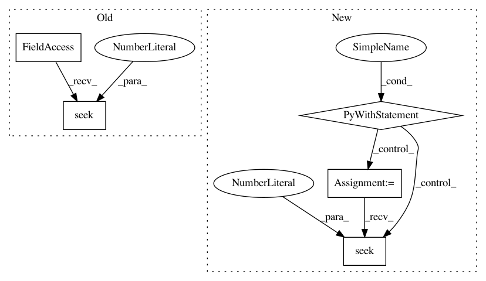

3a1eb421e538d56db4e30b65c38d6221e066aa78,skbio/core/tests/test_distance.py,DissimilarityMatrixTests,test_from_file_real_file,#DissimilarityMatrixTests#,145
Before Change
def test_from_file_real_file(self):
Should correctly parse a real on-disk file.
self.tmp_f.write("\n".join(DM_3x3_WHITESPACE_F))
self.tmp_f.seek(0)
obs = DissimilarityMatrix.from_file(self.tmp_f)
self.assertEqual(obs, self.dm_3x3)
After Change
def test_from_file_real_file(self):
Should correctly parse a real on-disk file.
with tempfile.TemporaryFile(mode="r+",
prefix="skbio.core.tests.test_distance",
suffix=".txt") as fh:
fh.write("\n".join(DM_3x3_WHITESPACE_F))
fh.seek(0)
obs = DissimilarityMatrix.from_file(fh)
self.assertEqual(obs, self.dm_3x3)
def test_from_file_invalid_input(self):
Raises error on ill-formatted dissimilarity matrix file.
In pattern: SUPERPATTERN
Frequency: 3
Non-data size: 5
Instances
Project Name: biocore/scikit-bio
Commit Name: 3a1eb421e538d56db4e30b65c38d6221e066aa78
Time: 2014-05-11
Author: mcdonadt@colorado.edu
File Name: skbio/core/tests/test_distance.py
Class Name: DissimilarityMatrixTests
Method Name: test_from_file_real_file
Project Name: thoughtfulml/examples-in-python
Commit Name: 4d0bfe9f8ea7d868ce309c96e939ce309b93b1c8
Time: 2017-06-13
Author: alexey.porotnikov@gmail.com
File Name: naive_bayes/tests/test_plain_text_email.py
Class Name: TestPlaintextEmailObject
Method Name: setUp
Project Name: biocore/scikit-bio
Commit Name: 325199b76f0e2914e54077130104be45bbccea76
Time: 2014-04-16
Author: jorgecanardo@gmail.com
File Name: skbio/core/tests/test_distance.py
Class Name: DissimilarityMatrixTests
Method Name: test_from_file_real_file